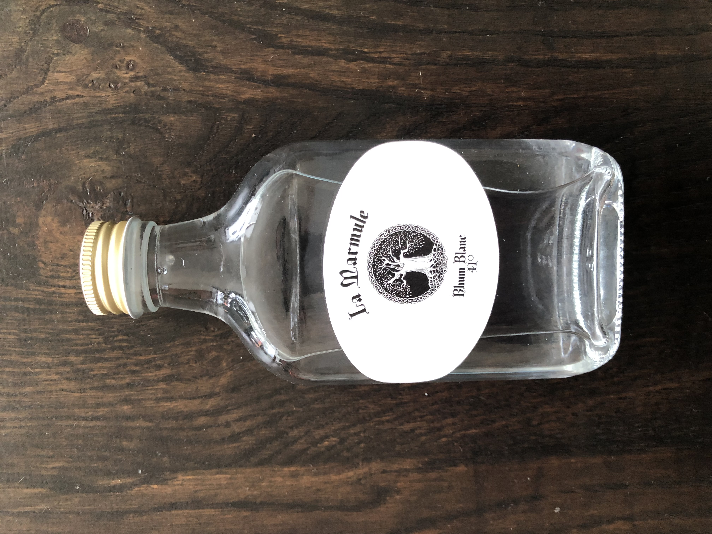
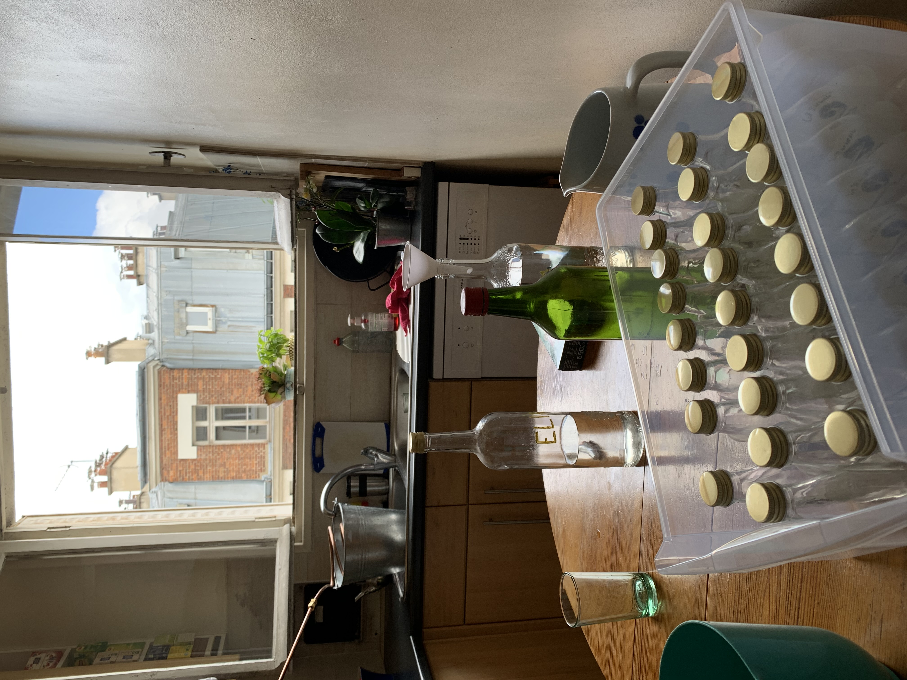
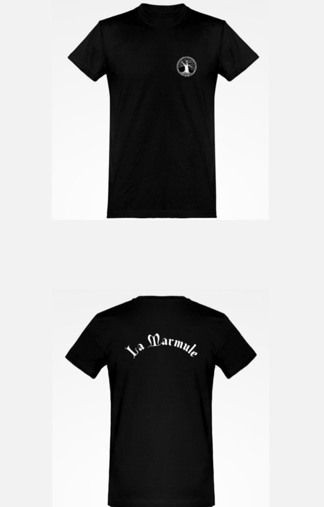
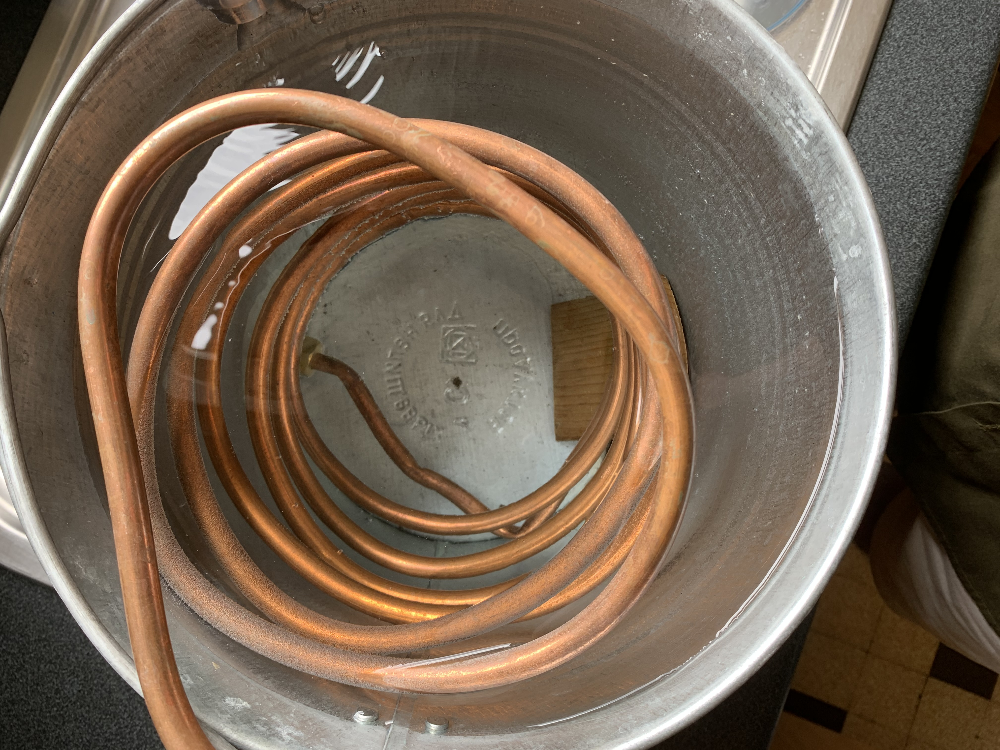
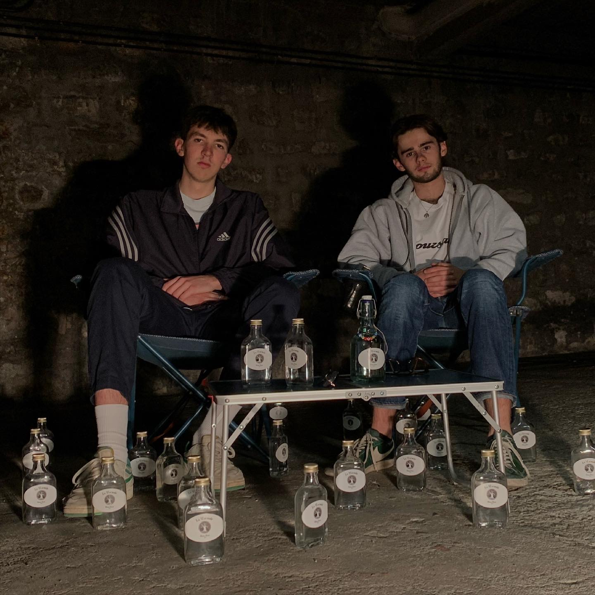

Vous l'attendiez tous, et vous avez bien fait ! Les stock nous à nouveau remplis, le meilleur rhum de Paris est en vente actuellement. Pour passer vos commandes ici. Pour toute commande supérieure à 10 bouteilles, veuillez nous contacter pour bénéficier de réductions.

Quelque-chose de gros se prépare. Un nouveau stock ? Chut, nous en avons déja trop dit 👀

Les nouveaux t-shirts "La Marmule" arrivent très bientôt, vous pouvez d'ores et déjà les précommander en nous enovyant un message sur notre page Instagram. Ne tardez pas, les quantités sont très limitées !

Retour en images sur le premier prototype d'alambic. Commencé il y a maintenant 4 ans, le projet a connu des phases d'expérimentations plus ou moins concluantes. Ce premier essai a été fabriqué grâce à un seau en métal et du cuivre enroulé.

Paul et Elias sont les deux co-fondateurs de La Marmule. Amis depuis l'âge de 8 ans, c'est au lycée que leur vient l'idée de créer leur propre alcool, qui deviendra quelques échecs et bricolage plus tard la marque que vous connaissez.